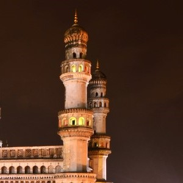
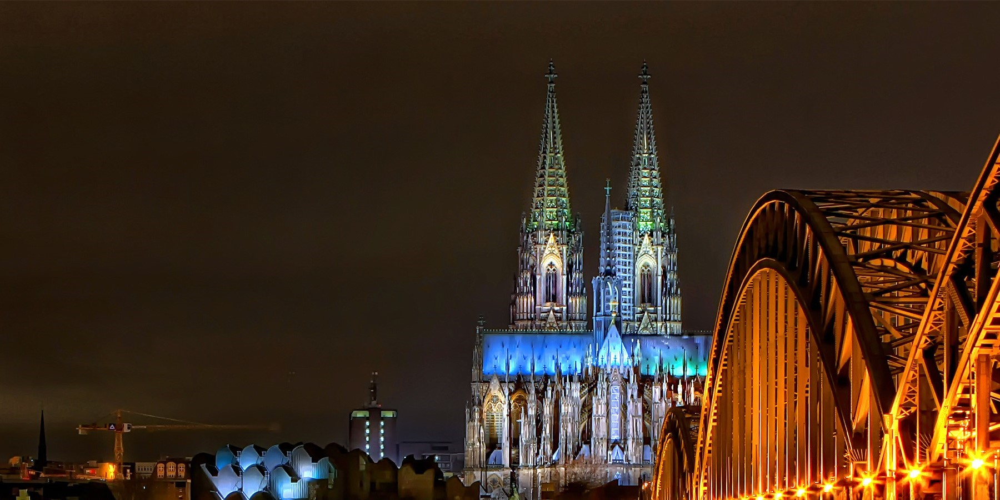
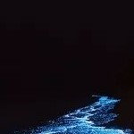
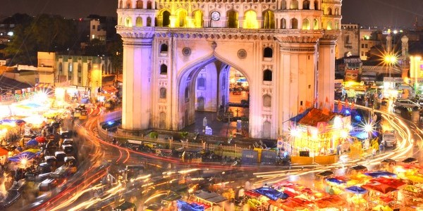

|
The calm of hussain sagar lake Here is Hyderabad for you |
 |  |  | |||
|  | CONTENT |

|
||||
| CONTENT |
|
This is a phenomena that can be witnessed on no moon nights. The water on the beach glows due to the presence of phytoplankton and this is why it is one of the top things to do when you visit Andaman. |
|
|||